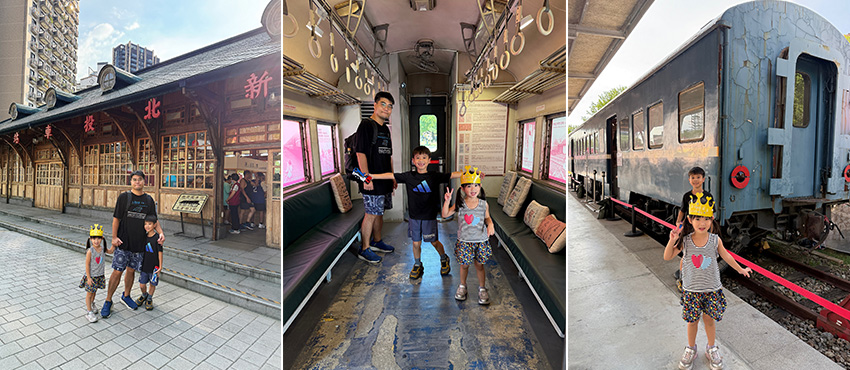
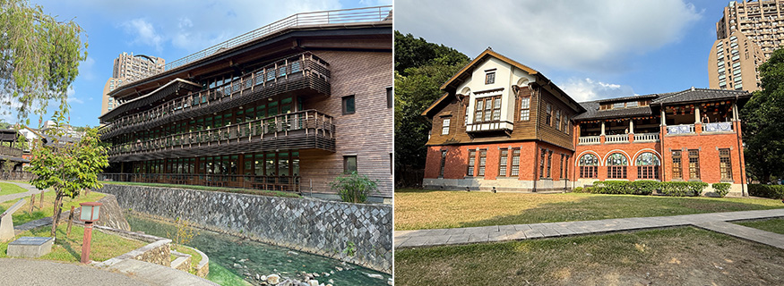
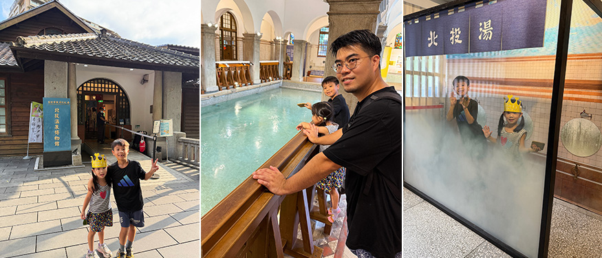
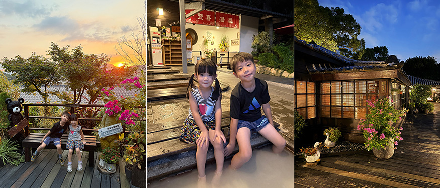

我一直很喜歡安排不用太趕、又能讓身心放鬆的半日小旅行。這次選擇了充滿日式風情與歷史文化氛圍的「北投」。從新北投車站、北投圖書館、北投溫泉博物館，到最後在少帥禪園看夕陽、泡足湯，短短半天時間，卻有種離開城市許久的錯覺。明明還在台北，卻彷彿走進了一座步調緩慢、充滿故事的小鎮。
第一站：新北投車站｜時空交錯的百年起點
抵達新北投，最先映入眼簾的是充滿復古氣息的車站建築，木造的日式外觀，讓人瞬間有種穿越時空的感覺。不同於一般捷運站的匆忙與喧囂，這裡更多了一份懷舊與悠閒。
走進車站內，空氣中瀰漫著淡淡檜木香氣，館內保留許多舊式文物與歷史介紹，讓人得以了解新北投作為溫泉勝地的發展歷程。
最令人驚喜的是停靠於車站旁的老式車廂，車內保留復古座椅與懷舊拉環，陽光透過車窗灑落進來，彷彿下一秒列車便會緩緩發動，載著當年的旅客駛向那段繁華的溫泉鄉歲月。這裡不只是拍照打卡景點，更像是一處能夠靜靜閱讀城市記憶的角落。
 |
第二站：北投圖書館｜樹屋裡的墨香與綠意
順著中山路往北投公園漫步，一座宛如森林樹屋般的木造建築映入眼簾，這是享有「全球最美圖書館之一」美譽的臺北市立圖書館北投分館。
第一次見到它時，真的會忍不住停下腳步。整棟建築大量運用木材與大片落地窗，與周圍綠意完美融合，彷彿是一座藏在森林裡的小木屋。建築本身採用綠建築設計，透過自然採光與通風營造舒適環境，讓人一走進去便感受到平靜與放鬆。坐在窗邊向外望去，綠樹隨風搖曳，陽光透過枝葉灑落地面，即使只是短暫停留，也能讓人不自覺放慢腳步與呼吸。若是帶著孩子同行，更能讓他們在閱讀空間與自然環境交融的氛圍中，感受不同於課堂的學習體驗。
 |
第三站：北投溫泉博物館｜大正時代的溫泉記憶
穿過圖書館旁的綠地，一棟融合英國鄉村別墅與日式黑瓦特色的雙層建築隨即映入眼簾，這裡是「北投溫泉博物館」。建築前身為日治時期的公共浴場，見證了北投溫泉文化的興盛歲月。
進入館內，換上館方準備的拖鞋，踏著嘎嘎作響的木地板，彷彿走進時光長廊。一樓寬敞的榻榻米大廳，是當年泡湯旅客休憩談天的場所；順著磨石子樓梯往下走，最令人震撼的便是保存完整的仿羅馬式大型公共浴池遺址。
館內展示著大量歷史文物與珍貴照片，細細閱讀之後，彷彿翻閱一本立體的北投發展史。過去總覺得博物館偏向靜態展示，但北投溫泉博物館因建築本身極具特色，加上豐富的歷史故事，讓整個參觀過程充滿驚喜與探索感。陽光透過木窗灑落室內，形成一道柔和光影，搭配濃厚的日式空間氛圍，讓人忍不住放慢腳步，細細感受這座建築所承載的歲月痕跡。
 |
第四站：少帥禪園｜伴隨夕陽的足湯時光
當烈日逐漸轉為柔和夕色，我們來到了位於幽雅路半山腰的少帥禪園。這裡建於 1920 年，曾是張學良將軍與夫人趙一荻被幽禁時的居所，如今則成為融合歷史、人文與溫泉體驗的特色園區。踏入園區，濃厚的日式禪風迎面而來。木造建築隱身於蒼松翠柏之間，小橋流水與石燈籠點綴其間，彷彿瞬間遠離塵囂，來到一處靜謐的山中秘境。
旅程中最享受的時刻，莫過於坐在足湯區，一邊泡腳、一邊等待夕陽。溫熱的泉水慢慢舒緩雙腳的疲憊，整個人也隨之放鬆下來。當天空由淡藍漸漸染上橘黃，夕陽餘暉灑落山頭，遠方台北盆地的燈火開始一盞盞亮起，與園區內溫暖的燈光交相輝映。微風吹來，帶著山間的涼意，而雙腳卻浸泡在暖暖的溫泉中，那種冷熱交織的舒適感，令人難以忘懷。
 |